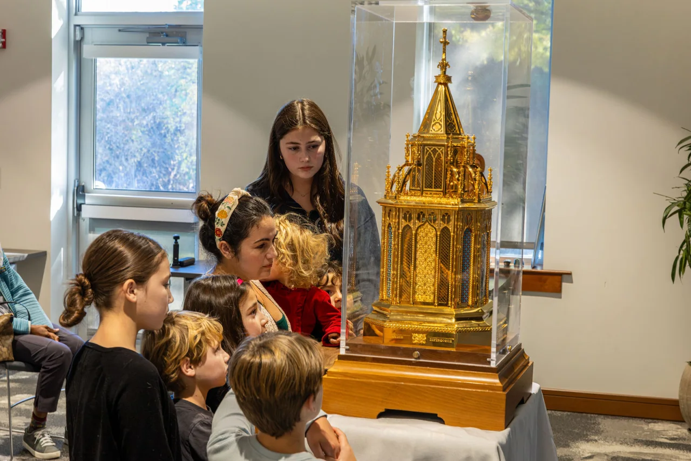

Deja que la oración crezca con tu familia.
Un plan sencillo para orar con quienes tienes cerca.
Empieza por los intereses, las preguntas y las necesidades de tu hijo. Elijan un punto de partida, compartan una oración y lleven un pequeño gesto de cuidado al día. Pueden empezar juntos, aquí mismo.

¿Cómo rezarás hoy?
Elige lo que mejor les sirva. Las edades son una orientación y escuchar en silencio también es participar.
Un momento para dar gracias.
Let a familiar voice lead. A young child can point or answer; a baby can simply be with you.
Notice someone you love.
Sit together and think of someone who has cared for your family. An adult can name one kindness. Invite a child to point to a family picture, say a name, or listen.
Say a little thank you.
Read this short family prayer slowly. A child may join in with “Amen.”
Jesús, gracias por quienes nos cuidan. Ayúdanos a compartir hoy tu amor. Amén.
Carry the thanks with you.
Offer a smile, a gentle word or a thank you to someone nearby. You can end here and pray again another day.
Reza por alguien. Después haz algo por esa persona.
A child who notices another person’s needs can bring that care into prayer. Let them choose a response or lead a familiar line.
Choose someone to pray for.
Ask: “Who could use a little care today?” An adult can offer an example. Anyone may name a person or keep the intention quietly; no one needs to explain private details.
Pray the Our Father.
One person can lead while others join in or listen. Keep the words here for anyone learning.
Our Father, who art in heaven, hallowed be thy name; thy kingdom come; thy will be done on earth as it is in heaven. Give us this day our daily bread; and forgive us our trespasses as we forgive those who trespass against us; and lead us not into temptation, but deliver us from evil. Amen.
Choose one act of kindness.
Could you help with a task, draw a picture, or share an encouraging word? Choose something small that fits your day. Offer it for the person you remembered.
Lean juntos, háganse preguntas y lleven una a la oración.
Take turns reading a story of faith. Let curiosity lead the conversation; there is room for questions as well as answers.
Read about Mary together.
An angel brought Mary the news that she would become the mother of Jesus. Mary listened and asked how this could happen. After hearing the angel’s answer, she accepted what God asked of her.
A short retelling of the Annunciation in Luke 1:26–38.
Take turns telling each other two or three things you noticed. What would you like to ask about this story? You can also use a story of a saint from a book you already have.
Pray a Hail Mary.
Bring your question or intention into prayer, aloud or quietly.
Hail Mary, full of grace, the Lord is with thee. Blessed art thou among women, and blessed is the fruit of thy womb, Jesus. Holy Mary, Mother of God, pray for us sinners, now and at the hour of our death. Amen.
Keep the conversation open.
Each person may choose one thought to carry into the day. If a question needs more time, agree to return to it together. You do not have to settle everything before you finish praying.
Lleva a la oración lo que vives cada día.
Offer choice, make room to listen, and let an adult model prayer too. No one has to make a speech or share something personal.
Pause with one part of your day.
Think of a friendship, responsibility, hope or difficult moment. Anyone may share an intention or hold it quietly. An adult can begin by naming something they are grateful for or need help with.
Offer a short prayer.
Choose someone to read these words, or take a quiet moment before praying together.
Lord Jesus, be with us in the things we face today. Help us listen, act with courage and treat others with kindness. Guide us when we do not know the next step. Amen.
Choose a response.
What is one small thing you can do with care today? It might be listening, asking for help, making an apology or following through on a responsibility. Keep your choice private if you prefer.
Distintas edades. Un momento compartido.
Let a younger child point or answer “Amen.” A reader can lead the words, an older child can choose a mystery, and an adult can listen or offer an intention. You do not all need the same role.
When you want to continue, the guided Rosary keeps the complete words beside you. Children who enjoy tracing and coloring can try the Guía ilustrada del Rosario en familia.
Inspired by Tiffany Walsh’s reflection Navigating Prayer Time as Children Grow, published in Family Rosary’s original guide. Practical activities inspired by that invitation. Read the original reflection (PDF).